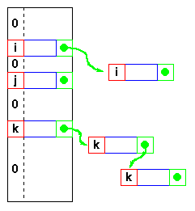
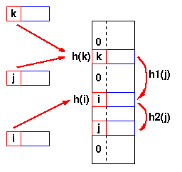

Data Structures and Algorithms: Hash Tables
|
Data Structures and Algorithms
|
| 8.3 Hash Tables
|
8.3.1 Direct Address Tables
If we have a collection of n elements
whose keys are
unique integers in (1,m),
where m >= n,
then we can store the items in a direct address table,
T[m],
where Ti is either empty or
contains one of the elements of our collection.
Searching a direct address table is clearly an O(1) operation:
for a key, k,
we access Tk,
- if it contains an element, return it,
- if it doesn't then return a NULL.
There are two constraints here:
- the keys must be unique, and
- the range of the key must be severely bounded.
|
 |
|
If the keys are not unique,
then we can simply construct
a set of m lists and
store the heads of these lists in
the direct address table.
The time to find an element matching
an input key will still be O(1).
However, if each element of the collection has some other distinguishing feature
(other than its key),
and
if the maximum number of duplicates is ndupmax,
then searching for a specific element is O(ndupmax).
If duplicates are the exception rather than the rule, then ndupmax
is much smaller than n and
a direct address table will provide good performance.
But if ndupmax
approaches n,
then the time to find a specific element is O(n)
and a tree structure will be more efficient.
|
 |
The range of the key determines the size of the direct address table and
may be too large to be practical.
For instance it's not likely that you'll be able to use a direct address
table to store elements which have arbitrary 32-bit integers as their keys for
a few years yet!
Direct addressing is easily generalised to the case
where there is a function,
h(k) => (1,m)
which maps each value of the key, k, to the range (1,m).
In this case,
we place the element in T[h(k)] rather than T[k] and we
can search in O(1) time as before.
8.3.2 Mapping functions
The direct address approach requires that the
function, h(k), is a one-to-one mapping
from each k to integers in (1,m).
Such a function is known as a
perfect hashing function:
it maps each key to a distinct integer within some
manageable range and
enables us to trivially build an O(1) search time table.
Unfortunately, finding a perfect hashing function is not always
possible.
Let's say that we can find a
hash function, h(k),
which maps most of the keys onto unique integers,
but maps a small number of keys on to the same integer.
If the number of
collisions
(cases where multiple keys
map onto the same integer), is sufficiently small,
then hash tables work quite well and give O(1) search times.
Handling the collisions
In the small number of cases, where multiple keys map to the
same integer, then elements with different keys may be stored in the
same "slot" of the hash table.
It is clear that when the hash function is used to locate a
potential match, it will be necessary to compare the key of that
element with the search key.
But there may be more than one element which should be stored
in a single slot of the table.
Various techniques are used to manage this problem:
- chaining,
- overflow areas,
- re-hashing,
- using neighbouring slots (linear probing),
- quadratic probing,
- random probing, ...
Chaining
One simple scheme is to chain all collisions in lists attached to the
appropriate slot. This allows an unlimited number of collisions to be
handled and doesn't require a priori knowledge of how many elements
are contained in the collection. The tradeoff is the same as with linked lists
versus array implementations of collections:
linked list overhead in space and,
to a lesser extent, in time.
Re-hashing
|
Re-hashing schemes use a second hashing operation when there is a collision.
If there is a further collision, we re-hash until an empty "slot" in the
table is found.
The re-hashing function can either be a new function or a re-application of the
original one. As long as the functions are applied to a key in the same order,
then a sought key can always be located.
Linear probing
One of the simplest re-hashing functions is +1 (or -1), ie on a collision,
look in the neighbouring slot in the table. It calculates the new address extremely
quickly and may be extremely efficient on a modern RISC processor due to
efficient cache utilisation (cf.
the discussion of linked list efficiency).
The animation gives you a practical demonstration
of the effect of linear probing:
it also implements a quadratic re-hash function so that you can compare
the difference.
|

h(j)=h(k), so the next hash function,
h1 is used. A second collision occurs,
so h2 is used.
|
Clustering
Linear probing is subject to a
clustering
phenomenon.
Re-hashes from one location occupy a block of slots in the table
which "grows" towards slots to which other keys hash.
This exacerbates the collision problem and the number of re-hashed can
become large.
Quadratic Probing
Better behaviour is usually obtained with quadratic
probing,
where the secondary hash function depends on the re-hash index:
address = h(key) + c i2
on the tth re-hash.
(A more complex function of i may also be used.)
Since keys which are mapped to the same value by the primary
hash function follow the same sequence of addresses,
quadratic probing shows
secondary clustering.
However, secondary clustering is not nearly as severe as
the clustering shown by linear probes.
Re-hashing schemes use the originally allocated table space and thus avoid linked list
overhead, but require advance knowledge of the number of items to be stored.
However, the collision elements are stored in slots to which other
key values map directly, thus the potential for multiple collisions increases
as the table becomes full.
Overflow area
Another scheme will divide the pre-allocated table into two
sections: the primary area to which keys are mapped and
an area for collisions, normally termed
the overflow area.
 |
When a collision occurs, a
slot in the overflow area is used for the new element and a link from the primary
slot established as in a chained system.
This is essentially the same as chaining, except that the overflow area is
pre-allocated and thus possibly faster to access.
As with re-hashing, the maximum number of elements must be known in advance,
but in this case,
two parameters must be estimated:
the optimum size of the primary and overflow areas.
|
Of course, it is possible to design systems with multiple overflow tables,
or with a mechanism for handling overflow out of the overflow area, which
provide flexibility without losing the advantages of the overflow scheme.
Summary: Hash Table Organization
| Organization | Advantages | Disadvantages |
| Chaining |
- Unlimited number of elements
- Unlimited number of collisions
|
- Overhead of multiple linked lists
|
| Re-hashing |
- Fast re-hashing
- Fast access through use
of main table space
|
- Maximum number of elements must be known
- Multiple collisions may become
probable
|
| Overflow area |
- Fast access
- Collisions don't use primary table space
|
- Two parameters which govern performance
need to be estimated
|
Animation
Hash Table Animation
This animation was written by Woi Ang. |
|
Please email comments to:
morris@ee.uwa.edu.au
|
- hash table
- Tables which can be searched for an item in O(1) time
using a hash function to form an address from the key.
- hash function
- Function which, when applied to the key, produces a
integer which can be used as an address in a hash table.
- collision
- When a hash function maps two different keys to the same
table address, a collision is said to occur.
- linear probing
- A simple re-hashing scheme in which the next slot in the
table is checked on a collision.
- quadratic probing
- A re-hashing scheme in which a higher (usually 2nd)
order function of the hash index is used to calculate the
address.
- clustering.
- Tendency for clusters of adjacent slots to be filled when
linear probing is used.
- secondary clustering.
- Collision sequences generated by addresses calculated with
quadratic probing.
- perfect hash function
- Function which, when applied to all the members of the
set of items to be stored in a hash table,
produces a unique set of integers within some
suitable range.
- collision
- A collision is generated when the hash function generates the
same value when applied to two different keys.
© John Morris, 1998